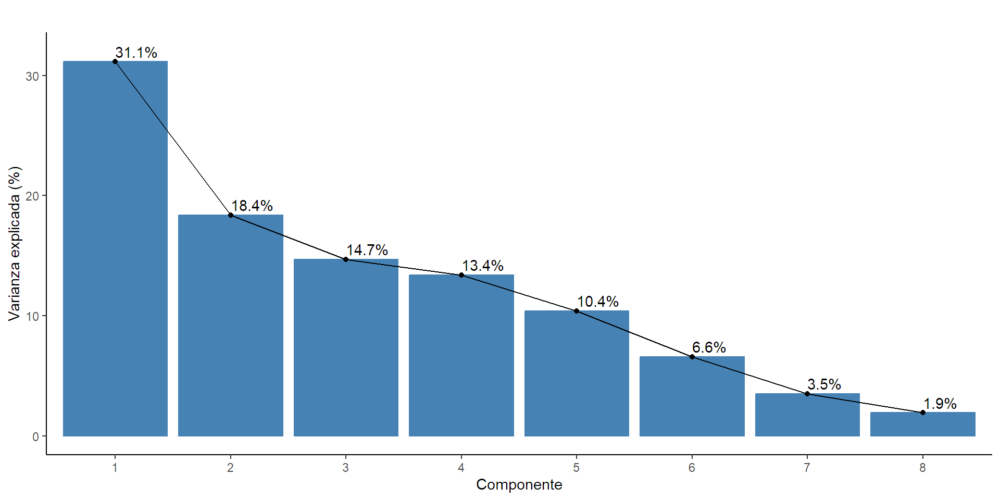
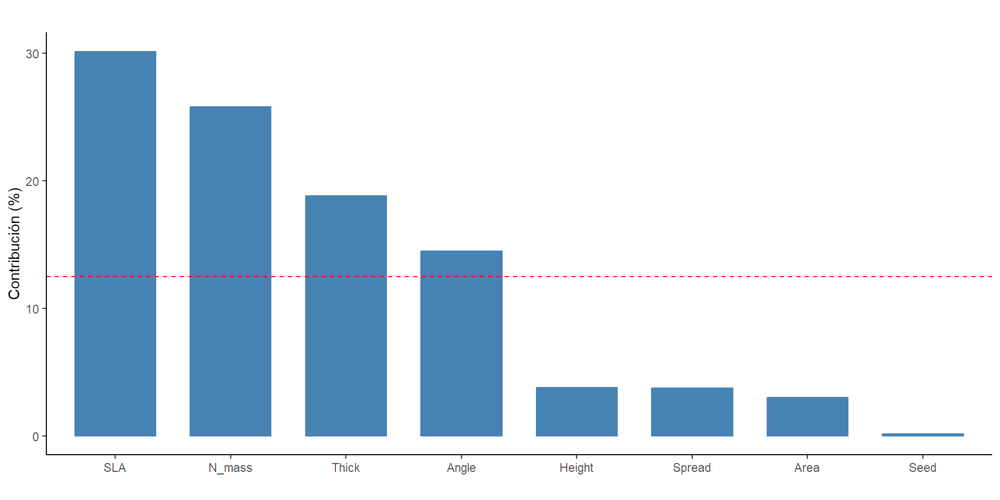
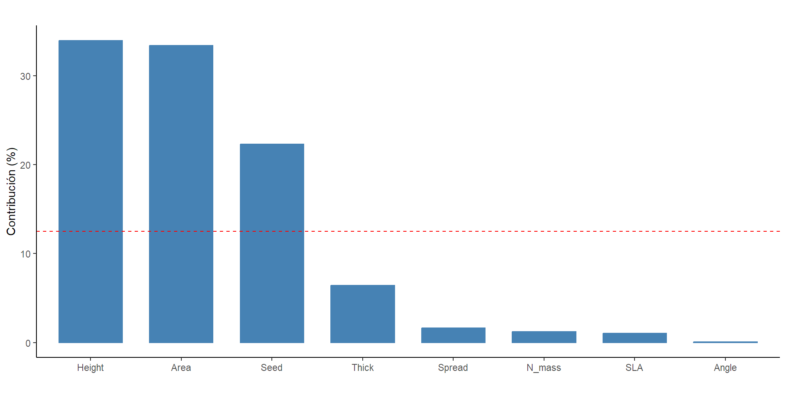
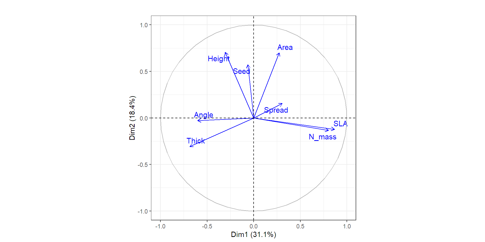
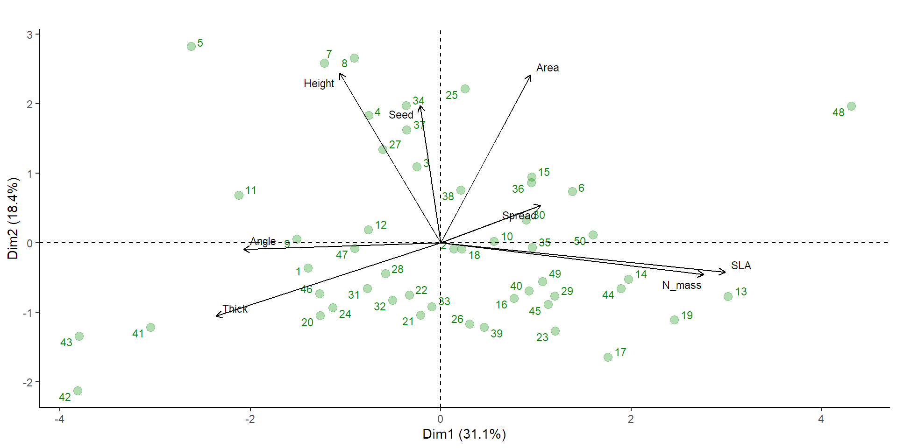

Técnicas de reducción de dimensiones
Análisis de componentes principales con RStudio
Introducción.
¿Qué es el ACP ó PCA?
Es una técnica multivariada de ordenación de interdependencia con enfoque descriptivo. La para interdepencia hace referencia a que en la matriz ninguna de las variables utilizadas figura como dependiente principal de las otras. En este análisis las componentes principales son nuevas variables creadas a partir de un conjunto de variables originales como combinaciones lineales de las mismas.
La estructuración de la técnica se debe a Hotelling (1933), aunque sus orígenes se encuentran en los ajustes ortogonales por mínimos cuadrados introducidos por K. Pearson (1901).
¿Cuáles son los objetivos del análisis?
Representar óptimamente en un espacio de dimensión pequeña, observaciones de un espacio p-dimensional con la mínima perdida de la información.
Identificar posibles variables latentes o no observadas, que están generando la variabilidad de los datos.
Transformar las variables originales, en general correladas, en nuevas variables incorreladas, facilitando la interpretación de los datos.
¿Qué se requiere para aplicar el análisis?
Para poder aplicar el análisis de importante que:
El conjunto de datos p-dimensional se encuentre correlacionado.
Ninguna de las variables destaque como variable dependiente principal.
Normalidad p-variante y que no existan datos atípicos influyentes en el enfoque inferencial.
¿Por qué es importante este análisis en los contextos biólogicos?
Los conjuntos de datos biológicos suelen tener un gran número de variables. Los componentes principales permiten al reducir la dimensionalidad sin perder mucha información, facilitar:
La identificación de patrones y relaciones subyacentes entre las variables que podrían ser difíciles de ver en el conjunto de datos original.
La visualización de la información.
El análisis posterior con otras técnicas.
Matriz de datos básica.
Descripción.
Las matrices en el archivo de Excel hacen parte del trabajo realizado por Choler en el 2005 y retomado por Dray et al en el 2014, donde el área de estudio comprendió 75 sitios de muestreo repartidos en dos hectáreas entre 2700 m y 2750 m de elevación sobre el suroeste de los Alpes europeo (Lieu ‐ dit Aravo, Commune de Valloire, Francia; 45.067 ° N, 6.394 ° E). La información que se presenta corresponde a 8 rasgos funcionales de la composición de plantas vasculares descrita por especie.
Variables.
Tabla 1. Descripción de las variables.
| Variables | Descripción |
|---|---|
| Specie | Abreviatura del nombre de la especie. |
| Height | Altura vegetativa (cm) |
| Spread | Extensión lateral máxima de plantas clonales (cm) |
| Angle | Ángulo de elevación de la hoja estimado en la mitad de la lámina. (°) |
| Area | Área de una sola hoja. (\(cm^2\)) |
| Thick | Espesor máximo de la sección transversal de una hoja (evitando la nervadura central) |
| SLA | Área foliar específica (\(cm^2\)/g) |
| N_mass | Contenido de nitrógeno foliar basado en la masa (mg/g) |
| Seed | Masa de semillas (g) |
PASOS PREVIOS.
Librerías requeridas.
Importar los datos.
tibble [50 × 9] (S3: tbl_df/tbl/data.frame)
$ Specie: chr [1:50] "Agro.rupe" "Alop.alpi" "Anth.nipp" "Aven.vers" ...
$ Height: num [1:50] 6 5 15 12 30 12 25 20 9 0 ...
$ Spread: num [1:50] 10 20 5 30 20 40 10 20 15 45 ...
$ Angle : num [1:50] 80 20 50 60 80 45 80 50 80 0 ...
$ Area : num [1:50] 60 191 280 420 180 ...
$ Thick : num [1:50] 0.12 0.2 0.08 0.14 0.4 0.14 0.2 0.2 0.15 0.14 ...
$ SLA : num [1:50] 8.1 15.1 18 12.5 6.5 19 13.7 11.5 10.2 9.2 ...
$ N_mass: num [1:50] 219 204 220 156 209 ...
$ Seed : num [1:50] 0.08 0.21 0.54 1.17 1.68 0.23 0.61 0.83 0.28 0.39 ...Análisis de componentes principales.
Paso 1. Exploración de los requerimientos - Normalidad MV.
| Test | Statistic | p value | Result |
|---|---|---|---|
| Mardia Skewness | 404.383706960018 | 1.72126170095638e-32 | NO |
| Mardia Kurtosis | 7.74499686185953 | 9.54791801177635e-15 | NO |
Paso 1. Exploración de los requerimientos - Matriz correlada.
| chisq | p.value | df |
|---|---|---|
| 65.58216 | 7.52e-05 | 28 |
Paso 2. Obtención de las componentes
| W1 | W2 | W3 | W4 | W5 | W6 | W7 | W8 |
|---|---|---|---|---|---|---|---|
| -0.1949 | 0.5828 | 0.3386 | -0.3253 | -0.2835 | 0.0678 | -0.5628 | -0.0136 |
| 0.1933 | 0.1284 | 0.0451 | 0.7666 | -0.4606 | 0.3725 | -0.0734 | 0.0129 |
| -0.3808 | -0.0224 | 0.6521 | -0.0474 | -0.0884 | 0.2295 | 0.5983 | 0.0927 |
| 0.1737 | 0.5778 | -0.4474 | -0.2573 | -0.0629 | 0.3186 | 0.4913 | -0.1509 |
| -0.4337 | -0.2532 | -0.2434 | -0.0617 | 0.2592 | 0.7390 | -0.2632 | -0.0464 |
| 0.5492 | -0.1009 | 0.1507 | -0.2652 | 0.0608 | 0.3163 | -0.0601 | 0.6984 |
| 0.5081 | -0.1101 | 0.3947 | -0.0996 | 0.2358 | 0.2327 | -0.0695 | -0.6703 |
| -0.0394 | 0.4724 | 0.1419 | 0.3924 | 0.7545 | -0.0458 | -0.0283 | 0.1703 |
Paso 3. Varianza explicada de las componentes
| Valor propio | Varianza explicada (%) | Varianza explicada acumulada (%) | |
|---|---|---|---|
| Dim.1 | 2.49 | 31.15 | 31.15 |
| Dim.2 | 1.47 | 18.38 | 49.52 |
| Dim.3 | 1.18 | 14.69 | 64.21 |
| Dim.4 | 1.07 | 13.38 | 77.60 |
| Dim.5 | 0.83 | 10.40 | 88.00 |
| Dim.6 | 0.53 | 6.58 | 94.58 |
| Dim.7 | 0.28 | 3.50 | 98.08 |
| Dim.8 | 0.15 | 1.92 | 100.00 |
Paso 4. Número de componentes óptimos

Paso 5. Suministros numéricos y proyección geométrica de los datos con respecto a las componentes.
Paso 5.1 Contribución por componente en formato gráfico.

PASO 5.1 Contribución por componente en formato gráfico.

PASO 5.2 Contribución por componente en formato tabla.
| variable | Contribución (%) |
|---|---|
| Height | 3.8000 |
| Spread | 3.7378 |
| Angle | 14.4985 |
| Area | 3.0185 |
| Thick | 18.8112 |
| SLA | 30.1581 |
| N_mass | 25.8207 |
| Seed | 0.1552 |
PASO 5.2 Contribución por componente en formato tabla.
| variable | Contribución (%) |
|---|---|
| Height | 33.9606 |
| Spread | 1.6484 |
| Angle | 0.0501 |
| Area | 33.3808 |
| Thick | 6.4112 |
| SLA | 1.0178 |
| N_mass | 1.2116 |
| Seed | 22.3196 |
PASO 5.3. Correlación por componente.
| Correlación | p-Value | |
|---|---|---|
| SLA | 0.8668 | 0.0000 |
| N_mass | 0.8021 | 0.0000 |
| Spread | 0.3052 | 0.0312 |
| Height | -0.3077 | 0.0297 |
| Angle | -0.6010 | 0.0000 |
| Thick | -0.6846 | 0.0000 |
PASO 5.3. Correlación por componente.
| Correlación | p-Value | |
|---|---|---|
| Height | 0.7066 | 0.0000 |
| Area | 0.7005 | 0.0000 |
| Seed | 0.5728 | 0.0000 |
| Thick | -0.3070 | 0.0301 |
PASO 5.3. Correlación por componente

PASO 5.4. Biplot.

PASO 5.4. Biplot.
